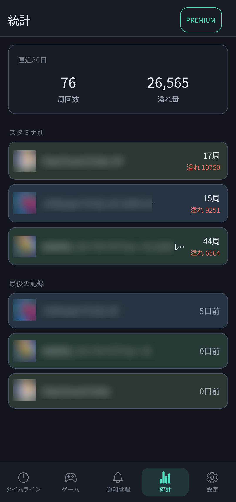
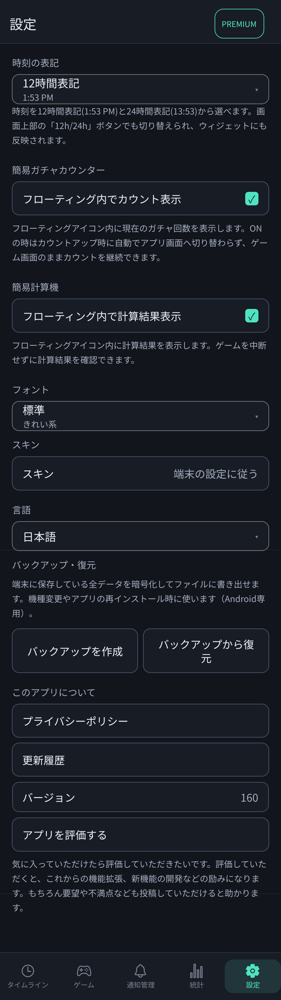
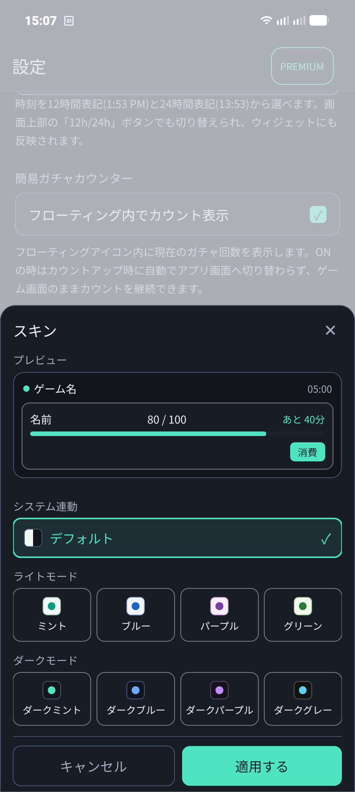
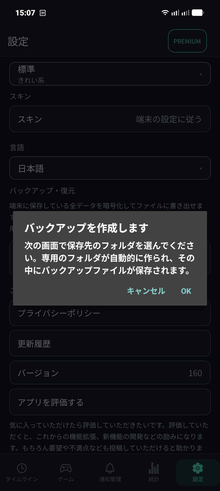
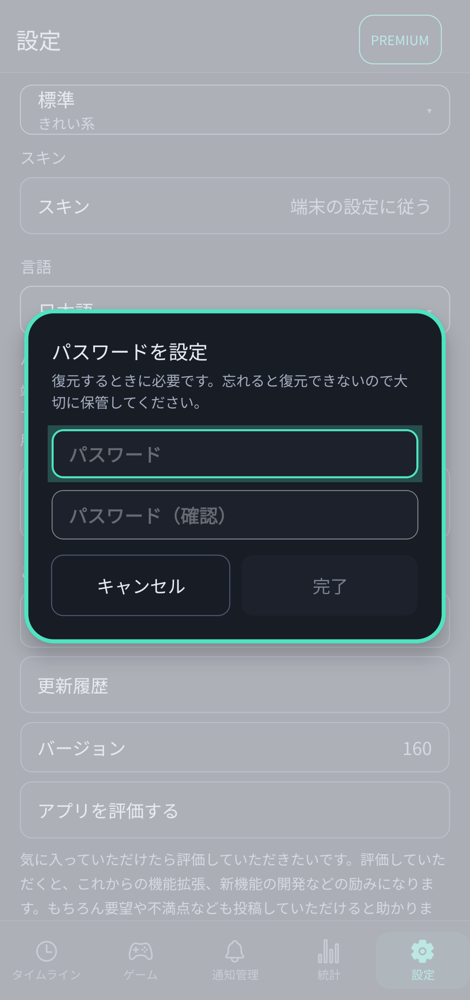
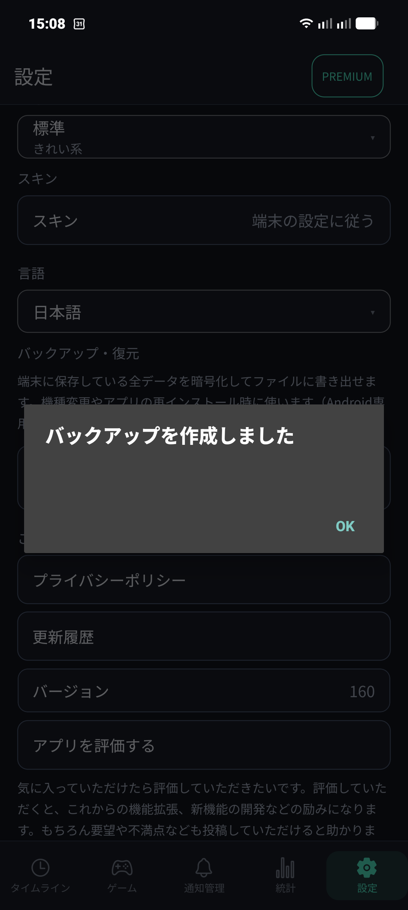

📈 5. 統計・スキン設定・暗号化バックアップ
日々の周回実績を振り返る「統計」機能、好みのデザインに切り替えられる「スキン」設定、そして機種変更や端末の初期化時に安心な「暗号化バックアップ・復元」の使い方を解説します。
📊 周回数とスタミナ溢れ量の「統計」画面
下部メニューの「統計」タブでは、直近30日間のプレイログを集計して表示します。

統計画面：直近30日の合計周回数・溢れ量、スタミナ別実績、最後の記録ログ
- 直近30日のサマリー：すべてのゲームを通じた「総周回数」と「総溢れ量」を大きく表示。
- スタミナ別実績：各ゲームのスタミナごとに、何周プレイしたか、何ポイント溢れたかを個別に比較できます。
- 最後の記録：各ゲームを最後に更新・操作した経過時間（例：0日前、5日前など）が表示され、ログイン忘れ防止に役立ちます。
🎨 スキン・テーマカラーの変更
「設定」タブの「スキン」から、端末のOS設定に追従する自動切り替えのほか、豊富なライト・ダークテーマを自由に選べます。

設定画面：時刻表記、ツール設定、フォント、スキン、バックアップ

スキン選択：プレビューを見ながら好みのカラーをワンタップ適用
- システム連動：端末のダークモード設定に合わせて自動で切り替えます。
- ライトモードカラー：ミント、ブルー、パープル、グリーンの4種類。
- ダークモードカラー：ダークミント、ダークブルー、ダークパープル、ダークグレーの4種類。
🔐 データの暗号化バックアップと復元（機種変更対応）
端末に保存されている全ゲーム・スタミナ・設定データを暗号化してファイルに書き出せます。機種変更やアプリの再インストール時に確実にデータを引き継げます。

1. バックアップ作成ダイアログで「OK」をタップし保存先フォルダを選択

2. 復元時に必要なパスワードを設定して安全に暗号化

3. バックアップ完了！専用フォルダにファイルが保存されます
⚠️ パスワードの管理について
バックアップファイルは強力な暗号化によって保護されています。復元する際には設定したパスワードが必須となりますので、忘れないよう大切に控えておいてください。
データの復元手順
- 新しい端末に「スタミナ手帳」をインストールします。
- 保存しておいたバックアップファイル（`.backup`）を端末内またはGoogleドライブ経由で新しい端末へ移します。
- 設定画面の「バックアップから復元」をタップし、該当ファイルを選択します。
- バックアップ時に決めたパスワードを入力すると、登録したゲームや設定がすべて復元されます。